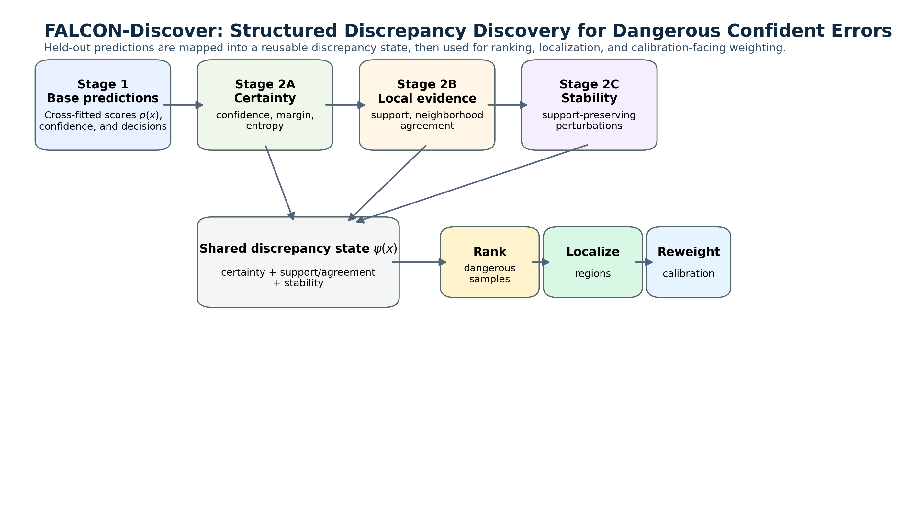
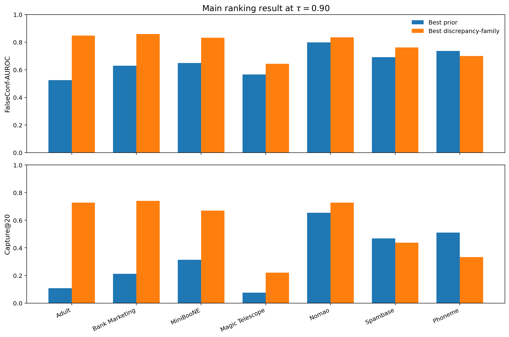
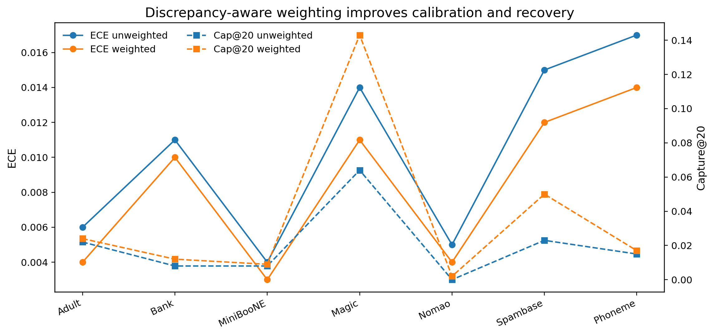

A compact, upload-ready GitHub artifact for double-blind review. This version exposes the reusable discrepancy-state interface, precomputed results, recreation scripts, and polished reviewer-facing figures, while withholding the full private orchestration stack.

Bank Marketing family FalseConf-AUROC.
Adult improvement over strongest prior baseline.
Anonymous binary tabular benchmarks.
Four seeds, five-fold cross-fitting.
pip install -e . -r requirements.txt
python scripts/quick_demo.py
python scripts/make_main_results.py
python scripts/make_operational_impact.py
python scripts/make_family_ablation.py
python scripts/make_extended_validation.py
python scripts/make_consequences_baselines.py
python scripts/make_uncertainty_table.py
python scripts/make_null_concentration.py
python scripts/make_figures.pyThe repository includes reviewer-facing figures for the main result, operational impact, weighted calibration, null comparison, and extended validation summaries.

